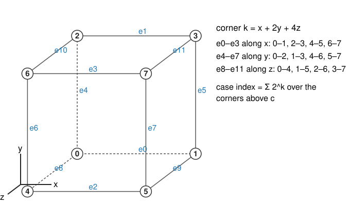
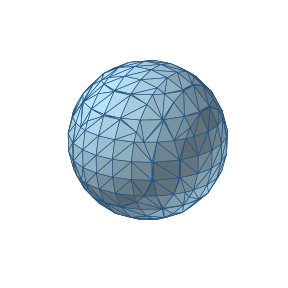
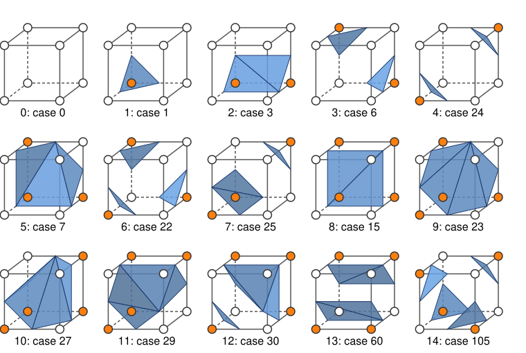
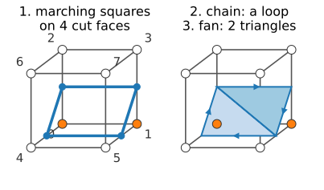
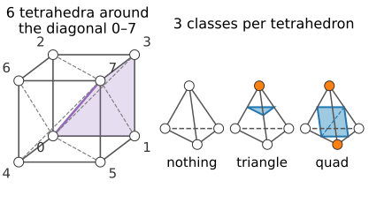
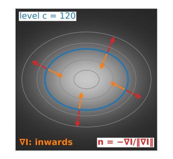

Marching squares drew the boundary \{I = c\} of a 2D image as curves. The same idea in a volume gives a surface made of triangles: marching cubes (Lorensen & Cline, 1987), the standard way to turn a 3D image into a 3D model.
A cell is a cube of 8 voxels: 256 cases, which symmetry reduces to 23 or 15.
The triangle table, and how to generate it from marching squares on the cube’s faces.
Ambiguous faces, cracks, and how to avoid them; marching tetrahedra.
Normals from the image gradient: smooth shading for free.
Slides titled The math give the formulas and proofs; the ideas are complete without them.
The same idea, one dimension up

A cell = the cube between 8 neighbouring voxel centres. Corner k = x + 2y + 4z.
Each corner above or below c: an 8-bit case index, 2^8 = 256 cases.
An edge with corners on opposite sides is crossed once; the crossing point by linear interpolation, t = (c - I_a)/(I_b - I_a), as in 2D.
The crossing points are connected by triangles: up to 5 per cube.
Shared edges: one closed mesh
A cube edge is shared by up to 4 cubes, and each computes the same crossing point. Store the point once per grid edge and let all triangles index it: a mesh with shared vertices, not a soup of loose triangles.
With a consistent rule on every face, the triangles of neighbouring cubes meet edge to edge: the surface is closed (watertight), apart from where it leaves the volume. Pad the volume with background to close it.
One pass over the cells: n^3 cubes for an n^3 volume. The output grows with the area of the surface, about n^2 triangles, not with the volume.
For a smooth surface: about 2 triangles per vertex, and about 3 triangles per unit of area (in voxel units).

A sphere of radius 4.3 voxels: 620 triangles ≈ 2 per vertex.
256 cases, but only 15 shapes

Rotations: turning the cube turns the case into another case with the same surface, turned. The cube has 24 rotations; they group the 256 cases into 23 classes.
Complement: swapping inside and outside gives the same surface with the normals flipped. Rotations + complement: 15 classes (the table of Lorensen & Cline). As we will see, the complement step is not innocent.
The math: counting classes (Burnside)
The number of classes = the average number of cases left unchanged by a rotation. A case is unchanged when all corners in each cycle of the corner permutation have the same state: 2^{\#\text{cycles}} cases.
With the complement as well (48 symmetries; a complement-rotation fixes a case when every cycle has even length and alternates), the same count gives 15.
Generating the triangle table
The table lists, for each of the 256 cases, which edges the triangles connect. We do not copy it; we generate it:
The surface meets each face of the cube in a marching-squares contour: run marching squares on the 6 faces (with a rule for saddle faces).
Every crossed edge belongs to two faces, so the face segments chain into closed loops around the cube.
Triangulate each loop as a fan (a polygon of m points gives m - 2 triangles).
Case 1 (one corner above): one loop of 3 points, 1 triangle. Case 3 (an edge): a loop of 4, 2 triangles.
The face rule is all the table “knows”: change the rule, and you get a different table.

Try it: one cube
Ambiguous faces and cracks
A face with diagonal corners above is a 2D saddle: the surface may separate or join the two bright corners on that face. 6 of the 15 classes contain such a face (120 of the 256 cases).
The face is shared with the neighbouring cube. If the two cubes choose differently, their triangles end at different points on that face: a crack (a hole) in the surface.
The 15-class table makes exactly this mistake (Dürst, 1988): using the complement swaps “separate” for “join” in cases with many corners above, so neighbours can disagree.
Fixes:
one consistent rule for all faces (e.g. always separate; 23 classes, no complement): closed, but sometimes the wrong topology;
the asymptotic decider on each face (Nielson & Hamann, 1991): consistent, because both cubes see the same 4 face values, and usually the right topology;
ambiguities inside the cube (tunnels) need more cases (Chernyaev’s 33 cases, 1995; Lewiner et al., 2003).
Try it: a crack
Marching tetrahedra
Split each cube into tetrahedra (5 or 6) and run the same idea per tetrahedron: 4 corners, 2^4 = 16 cases.
Up to symmetry only 3: nothing (all in or all out), one corner separated (1 triangle), two and two (a quad, 2 triangles).
Never ambiguous: no tetrahedron has a face with diagonal corners (its faces are triangles).
Costs: more triangles (often 2–4 times), thin triangles, and a directional bias from the chosen diagonals; the split must match between neighbouring cubes (the 5-tetrahedron split alternates between neighbours).

On the sphere of the earlier slide: 1896 triangles instead of 620.
The math: why a tetrahedron is unambiguous
Inside a tetrahedron with corners \mathbf p_0, \dots, \mathbf p_3 every point is \sum \lambda_i \mathbf p_i with barycentric weights \lambda_i \ge 0, \sum\lambda_i = 1. The natural interpolant is f = \sum \lambda_i I_i, which is linear (affine) in \mathbf x.
The level set \{f = c\} of an affine function is a plane. A plane cuts a tetrahedron in nothing, a triangle or a quadrilateral, always connected: no choice to make.
On a shared triangular face, f is the same affine function seen from both sides, so neighbours agree automatically.
The cube’s trilinear interpolant is not affine (its xy, yz, xz, xyz terms bend the level set): that is where the ambiguity comes from.
Normals from the image
To shade a surface we need its normal at every vertex. A level set has one for free:
Moving along the surface, I stays equal to c; moving across it, I changes fastest. So the normal points along the gradient\nabla I.
For a bright object, \nabla I points inwards (towards higher values): the outward normal is \mathbf n = -\nabla I / \lVert\nabla I\rVert.
Compute \nabla I at the voxels by central differences (or Sobel, kernels/), interpolate it trilinearly to each vertex, normalise.
Result: smooth shading from a coarse mesh, because the normals come from the image, not from the facets.

The math: gradient normals
If \mathbf x(s) is any curve on the surface, I(\mathbf x(s)) = c, so \nabla I \cdot \mathbf x'(s) = 0: the gradient is perpendicular to every tangent direction.
Central differences with spacing: \partial_x I \approx \dfrac{I[i+1] - I[i-1]}{2\Delta x}, and likewise with \Delta y, \Delta z. Divided by voxels instead, the z component is \Delta z/\Delta x times too large and the normals tilt.
At a vertex \mathbf v on an edge: \nabla I(\mathbf v) \approx trilinear interpolation of the 8 voxel gradients around it (or linear along the edge).
Face normals instead: \mathbf n = (\mathbf b - \mathbf a) \times (\mathbf c - \mathbf a) per triangle; constant per facet, so the mesh looks faceted. Shading with normals (Lambert, Phong) is the 3D-graphics day.
When gradient normals fail
Noise: the gradient of a noisy image points in random directions; the surface looks speckled. Blur first.
Flat regions: where \lVert\nabla I\rVert \approx 0 (a plateau touching c), the direction is undefined.
Binary images (a 0/1 mask): central differences give only a few directions (combinations of -1, 0, 1), so the normals are as blocky as the mask. Blur the mask slightly first (last unit).
Wrong spacing in the differences: tilted normals, wrong lighting.
Try it: marching cubes on a volume
Summary
Marching cubes: per cube of 8 voxels, case index (256) → crossed edges → triangles; vertices by linear interpolation, shared between cubes: a closed, indexed mesh in one pass.
Symmetry: 24 rotations → 23 classes; with the complement → 15.
The triangle table = marching squares on the 6 faces + chaining into loops + fans; the face rule decides it.
Ambiguous faces must be resolved the same way by both neighbours (consistent rule or asymptotic decider), or the surface cracks. Marching tetrahedra is never ambiguous, at the cost of more triangles.
Normals\mathbf n = -\nabla I/\lVert\nabla I\rVert from the image give smooth shading; blur noisy and binary images first.